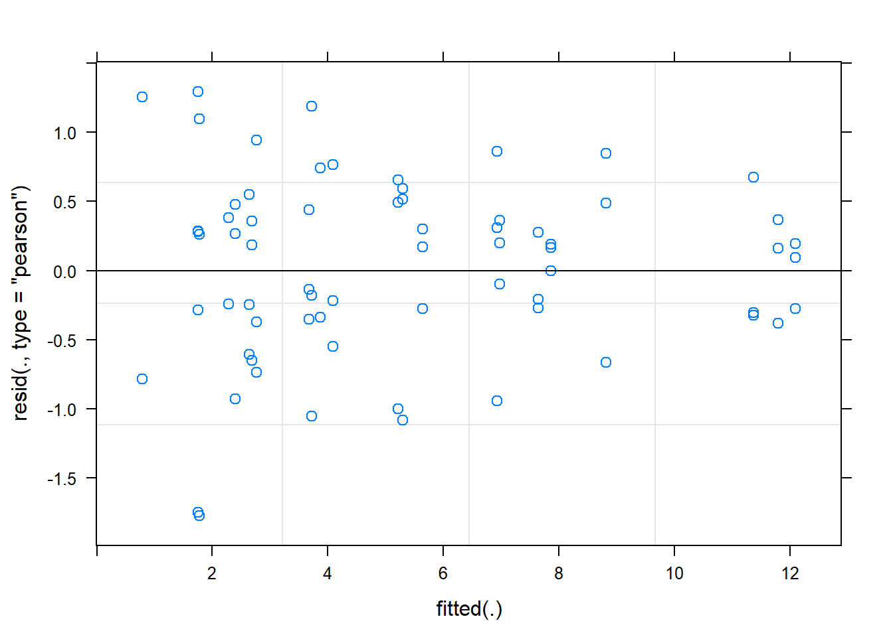
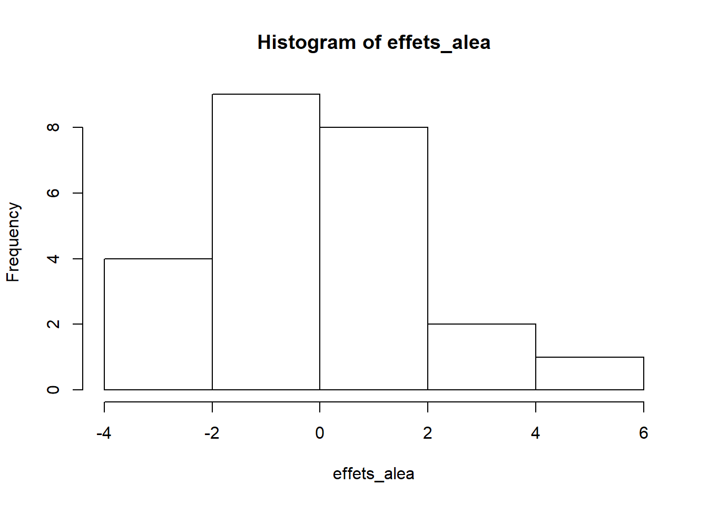

Mixed models
November 21, 2018
1. Effect of nitrogen on the yield of oat varieties
The Oats data frame included in the nlme package shows the results of a split-plot agricultural experiment. The experiment is done in six blocks (Block). Each block is divided into three sections where a different variety of oats is sown (Variety), then each section is divided into four quadrants, each receiving a different concentration of nitrogen (nitro): 0, 0.2, 0.4 or 0.6. The response variable is the oat yield of each of the 72 quadrants (6 blocks x 3 varieties x 4 nitrogen concentrations).
library(nlme)
data(Oats)
# Changer le bloc en facteur non-ordonné
Oats$Block <- factor(Oats$Block, ordered = FALSE)
str(Oats)## Classes 'nfnGroupedData', 'nfGroupedData', 'groupedData' and 'data.frame': 72 obs. of 4 variables:
## $ Block : Factor w/ 6 levels "VI","V","III",..: 6 6 6 6 6 6 6 6 6 6 ...
## $ Variety: Factor w/ 3 levels "Golden Rain",..: 3 3 3 3 1 1 1 1 2 2 ...
## $ nitro : num 0 0.2 0.4 0.6 0 0.2 0.4 0.6 0 0.2 ...
## $ yield : num 111 130 157 174 117 114 161 141 105 140 ...
## - attr(*, "formula")=Class 'formula' language yield ~ nitro | Block
## .. ..- attr(*, ".Environment")=<environment: R_GlobalEnv>
## - attr(*, "labels")=List of 2
## ..$ y: chr "Yield"
## ..$ x: chr "Nitrogen concentration"
## - attr(*, "units")=List of 2
## ..$ y: chr "(bushels/acre)"
## ..$ x: chr "(cwt/acre)"
## - attr(*, "inner")=Class 'formula' language ~Variety
## .. ..- attr(*, ".Environment")=<environment: R_GlobalEnv>- For the
BlockandVarietyfactors, which kind of contrasts should you use to compare the effect of each category to the mean, rather than to a reference category? Specify this type of contrast and name the contrast variables to facilitate the interpretation.
Answer
contrasts(Oats$Block) <- "contr.sum"
# Adding names to contrasts (matching the first N-1 levels)
colnames(contrasts(Oats$Block)) <- levels(Oats$Block)[-6]
contrasts(Oats$Variety) <- "contr.sum"
colnames(contrasts(Oats$Variety)) <- levels(Oats$Variety)[-3]- Estimate the parameters of a linear model of yield as a function of nitrogen concentration, oat variety and a fixed effect of the block. Check if it is useful to include the interaction between nitrogen and variety. What would such an interaction mean?
Answer
An interaction would mean that the effect of nitrogen on yield varies from variety to variety.
To check if the interaction is significant between a categorical variable and a numeric variable, we can look at the ANOVA table of the model with the interaction. This shows that the interaction is not significant.
mod1b_inter <- lm(yield ~ nitro * Variety + Block, Oats)
anova(mod1b_inter)## Analysis of Variance Table
##
## Response: yield
## Df Sum Sq Mean Sq F value Pr(>F)
## nitro 1 19536.4 19536.4 81.5155 7.648e-13 ***
## Variety 2 1786.4 893.2 3.7268 0.02972 *
## Block 5 15875.3 3175.1 13.2479 9.642e-09 ***
## nitro:Variety 2 168.3 84.2 0.3512 0.70524
## Residuals 61 14619.6 239.7
## ---
## Signif. codes: 0 '***' 0.001 '**' 0.01 '*' 0.05 '.' 0.1 ' ' 1We could also have compared the AICc for the models with and without interaction, confirming that the no interaction model is preferrable.
mod1b <- lm(yield ~ nitro + Variety + Block, Oats)
library(AICcmodavg)
aictab(list(sans_inter = mod1b, avec_inter = mod1b_inter))##
## Model selection based on AICc:
##
## K AICc Delta_AICc AICcWt Cum.Wt LL
## sans_inter 10 611.33 0.00 0.92 0.92 -293.86
## avec_inter 12 616.18 4.86 0.08 1.00 -293.45- Choose the model with or without interaction according to your result in (b), check the diagnostic graphs and interpret the value of the coefficients.
Answer
plot(mod1b) # Model without interaction
There is no marked trend for residuals. The quantile-quantile plot shows that the observations have a little less extreme values than a normal distribution (because the quantiles of the residuals at both ends are closer to 0 than the theoretical quantiles).
summary(mod1b)##
## Call:
## lm(formula = yield ~ nitro + Variety + Block, data = Oats)
##
## Residuals:
## Min 1Q Median 3Q Max
## -30.519 -12.959 0.781 10.706 34.631
##
## Coefficients:
## Estimate Std. Error t value Pr(>|t|)
## (Intercept) 81.8722 3.0213 27.098 < 2e-16 ***
## nitro 73.6667 8.0748 9.123 3.97e-13 ***
## VarietyGolden Rain 0.5278 2.5535 0.207 0.83692
## VarietyMarvellous 5.8194 2.5535 2.279 0.02606 *
## BlockVI -7.7222 4.0374 -1.913 0.06034 .
## BlockV -13.0556 4.0374 -3.234 0.00195 **
## BlockIII -8.0556 4.0374 -1.995 0.05035 .
## BlockIV -5.8056 4.0374 -1.438 0.15540
## BlockII 3.2778 4.0374 0.812 0.41993
## ---
## Signif. codes: 0 '***' 0.001 '**' 0.01 '*' 0.05 '.' 0.1 ' ' 1
##
## Residual standard error: 15.32 on 63 degrees of freedom
## Multiple R-squared: 0.7155, Adjusted R-squared: 0.6794
## F-statistic: 19.81 on 8 and 63 DF, p-value: 1.507e-14- The intercept is the average yield at a nitrogen concentration of 0.
- The yield increases by about 74 per unit increase in nitrogen concentration. Note: Since the concentration varies between 0 and 0.6, it would be more useful to divide this value, e.g. the yield increases by 7.4 for each 0.1 units of nitrogen.
- Golden Rain and Marvelous varieties are 0.5 and 5.8 above average, respectively. The third variety (Victory) has a yield 6.3 lower than the average (- (0.5 + 5.8)).
- Similarly, the coefficients of the blocks give the mean yield difference between that block and the overall mean. The last block (BlockI) has a yield 31.4 higher than the mean (the sum of the six differences must be 0 for
contr.sum).
- Now estimate the parameters of a mixed model identical to the linear model in (c), except that the effect of the blocks is random rather than fixed. Compare the fixed effects common to both models, as well as the block fixed effects of the previous model to the random effects of this new model. Explain the differences you observe, if any.
Answer
The fixef and ranef functions give us the fixed and random effects of the mixed model.
library(lme4)
mod1d <- lmer(yield ~ nitro + Variety + (1 | Block), Oats)
fixef(mod1d)## (Intercept) nitro VarietyGolden Rain
## 81.8722222 73.6666667 0.5277778
## VarietyMarvellous
## 5.8194444ranef(mod1d)## $Block
## (Intercept)
## VI -7.151326
## V -12.090372
## III -7.460016
## IV -5.376357
## II 3.035455
## I 29.042616The fixed effects (intercept, nitrogen, and varieties) are the same for both models.
- Note: Here, we have a completely balanced design, with the same combinations of varieties and nitrogen concentrations in each block. If this were not the case, we would not expect the estimated effects for nitrogen and variety to be the same in both versions of the model.
The random block effects are less extreme than the fixed effects of the previous model (e.g. -7.2 instead of -7.7 for block VI, 29.0 rather than 31.4 for block I). This is consistent with the idea that the mixed model shrinks random effects.
- Calculate the intra-class correlation for the mixed model in (d). What is the mathematical significance of this coefficient? How do you interpret the result from a biological point of view?
Answer
The intra-class correlation is obtained by dividing the variance of the group random effects (blocks) by the sum of the group variance and the residual variance. These values appear in the summary result of the model.
summary(mod1d)## Linear mixed model fit by REML ['lmerMod']
## Formula: yield ~ nitro + Variety + (1 | Block)
## Data: Oats
##
## REML criterion at convergence: 590.2
##
## Scaled residuals:
## Min 1Q Median 3Q Max
## -1.84069 -0.80849 0.04022 0.70484 2.22148
##
## Random effects:
## Groups Name Variance Std.Dev.
## Block (Intercept) 245.0 15.65
## Residual 234.7 15.32
## Number of obs: 72, groups: Block, 6
##
## Fixed effects:
## Estimate Std. Error t value
## (Intercept) 81.8722 7.0687 11.582
## nitro 73.6667 8.0748 9.123
## VarietyGolden Rain 0.5278 2.5535 0.207
## VarietyMarvellous 5.8194 2.5535 2.279
##
## Correlation of Fixed Effects:
## (Intr) nitro VrtyGR
## nitro -0.343
## VartyGldnRn 0.000 0.000
## VartyMrvlls 0.000 0.000 -0.500cic <- 245 / (234.7 + 245)
cic## [1] 0.5107359This coefficient means that after taking into account the fixed effects (variety and nitrogen), the variation between the blocks accounts for 51% of the remaining variance, the other 49% being the variation between observations of the same block. From a biological point of view, this means that large-scale (block) and small-scale (quadrant) random factors have about equal influence on observed yield.
2. Indicators of disease in bees
American foulbrood is an infectious disease affecting bee colonies. The bees.csv dataset, from the Zuur et al. textbook Mixed Effects Models and Extensions in Ecology with R, contains measurements of bacterial spore density (Spobee) found on 72 bees from 24 hives (Hive, 3 bees per hive).
We want to determine the relationship between this density of spores and two variables defined for each hive: the level of infection observed in the hive (Infection) and an estimate of the size of the colony (BeesN).
bees <- read.csv("bees.csv")
str(bees)## 'data.frame': 72 obs. of 7 variables:
## $ Rawdata : num 2 4 2 2 6 0 6 2 5 10 ...
## $ Spobee : num 6.67 13.33 6.67 6.67 20 ...
## $ Hive : int 1 1 1 2 2 2 3 3 3 4 ...
## $ X : int 0 0 0 0 0 0 0 0 0 0 ...
## $ Y : num 0 0 0 91 91 91 262 262 262 353 ...
## $ Infection: int 0 0 0 0 0 0 0 0 0 0 ...
## $ BeesN : int 95000 95000 95000 95000 95000 95000 85000 85000 85000 90000 ...- Before modeling these data, perform the following transformations.
The level of infection is on a qualitative scale (0 = no symptoms, 1 = mild infection, 2 = moderate and 3 = severe). Since we have very few hives for the different levels of infection (1 level 1, 1 level 2, and 2 level 3), create a new
pres_infbinary variable that indicates presence (levels 1 to 3) or absence (level 0) of infection.The distribution of the
Spobeeresponse is very asymmetrical. As suggested by Zuur et al., create a new variable by applying thelog1pfunction, equivalent to log(Spobee + 1). This is a logarithmic transformation where 1 has been added to the response beforehand to avoid taking the logarithm of 0.Express the size of the colony in units of 10,000 bees.
Answer
library(dplyr)
bees <- mutate(bees, logspore = log1p(Spobee),
pres_inf = Infection > 0, Bees_10k = BeesN / 10000)- Estimate the parameters of a mixed model to determine the effect of presence of infection and colony size on the (transformed) spore density observed on bees. Which random effect would be appropriate for this problem?
Answer
Since observations are grouped by hive, we use Hive as the random effect.
mod2b <- lmer(logspore ~ pres_inf + Bees_10k + (1 | Hive), bees)
summary(mod2b)## Linear mixed model fit by REML ['lmerMod']
## Formula: logspore ~ pres_inf + Bees_10k + (1 | Hive)
## Data: bees
##
## REML criterion at convergence: 240.7
##
## Scaled residuals:
## Min 1Q Median 3Q Max
## -2.2837 -0.4321 0.1626 0.5108 1.6666
##
## Random effects:
## Groups Name Variance Std.Dev.
## Hive (Intercept) 4.8222 2.1960
## Residual 0.6033 0.7767
## Number of obs: 72, groups: Hive, 24
##
## Fixed effects:
## Estimate Std. Error t value
## (Intercept) 6.8529 1.7920 3.824
## pres_infTRUE 6.1487 1.2704 4.840
## Bees_10k -0.3953 0.2423 -1.631
##
## Correlation of Fixed Effects:
## (Intr) p_TRUE
## pres_nfTRUE -0.358
## Bees_10k -0.960 0.257- Use diagnostic graphs to verify model assumptions, including the normality of random effects.
Answer
The graph of residuals vs. fitted values indicates a possible problem with homogeneity of variance: the variance of the residuals decreases for the higher predicted values.
plot(mod2b)
The quantile-quantile plot of the residuals shows a fairly good normality (except for two extreme values at the bottom).
qqnorm(residuals(mod2b))
qqline(residuals(mod2b))
The quantile-quantile plot of the random effects seems to deviate from normality: the points follow a curve, indicating an asymmetric distribution.
effets_alea <- ranef(mod2b)$Hive$`(Intercept)`
qqnorm(effets_alea)
qqline(effets_alea)
The asymmetry is more evident in a histogram of the random effects.
hist(effets_alea)
- What is the intra-class correlation coefficient of this model? To more accurately estimate the fixed effects of this model, would it be better to sample more hives, or more bees per hive?
Answer
According to the summary results of the model in (b), the group variance is 4.82 and the residual variance is 0.60, for a coefficient of 0.89.
cic <- 4.82 / (4.82 + 0.60)
cic## [1] 0.8892989Since 89% of the random variation is present between hives and only 11% between individuals in the same hive, it would be more useful to sample more hives.
- What are the 95% confidence intervals for fixed effects in the mixed model? If we replace this model with a linear regression completely ignoring the
Hivevariable, would these intervals be narrower or wider, and why?
Answer
The confint function estimates confidence intervals.
confint(mod2b)## 2.5 % 97.5 %
## .sig01 1.5546533 2.82978175
## .sigma 0.6439126 0.96238928
## (Intercept) 3.4315810 10.27421447
## pres_infTRUE 3.7230680 8.57424212
## Bees_10k -0.8579460 0.06734691Here is the linear regression without hive effects.
mod2f <- lm(logspore ~ pres_inf + Bees_10k, bees)
confint(mod2f)## 2.5 % 97.5 %
## (Intercept) 4.7924563 8.913339
## pres_infTRUE 4.6878782 7.609432
## Bees_10k -0.6739221 -0.116677These confidence intervals are more narrow than those of the mixed model. In particular, the variable Bees_10k is significant here, but was not in the mixed model.
The linear regression assumes that the 72 observations are independent and calculates the confidence intervals according to this assumption. However, we have 3 observations in each of the 24 hives and these three observations are highly correlated, as shown by the result in (e). In this case, the linear model overestimates the precision of the estimates.